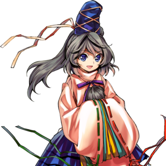
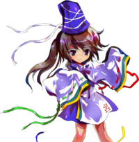
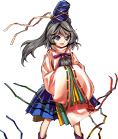

- Welcome to Touhou Wiki!
- Please register to edit. For assistance, check in with our Discord server or IRC channel.
Mononobe no Futo
Mononobe no Futo mononobe no ɸɯ̥to (♫) Futo Mononobe | |
|---|---|
|
 Mononobe no Futo in Antinomy of Common Flowers The Shikaisen from Ancient JapanMore Character Titles | |
| Species |
Taoist practitioner claiming to be a shikaisen |
| Abilities |
Manipulation of feng shui |
| Age |
More than 1400 years old |
| Location | |
Music Themes | |
Appearances | |
| Official Games | |
| |
| Print Works | |
| |
Mononobe no Futo (物部 布都) is a shikaisen, formerly a hermit practicing Taoism. She possesses the ability to manipulate feng shui, and is from an old era of Japan.
General Information[edit]
Futo first stands against the player in stage 5 of Ten Desires, as well as being a support parter for the stage 6 boss. She later became a playable character in Hopeless Masquerade, was a 9th Day Boss in Impossible Spell Card and appeared in Urban Legend in Limbo, again as a playable character.
She is generally thought to be a shikaisen, meaning that she was once a hermit who attempted to surpass the physical lifespan of a human by taking on the qualities of the dead. She essentially abandoned her body and transferred her soul into an object (said to be a plate). As a shikaisen, she is able to take on a great number of forms, but she prefers the traditional look she had when she was alive, as opposed to Toyosatomimi no Miko's decision to go with a more modern form.
In her official profile, ZUN lists her as a "Taoist self-identifying as a shikaisen", but it can be inferred from her backstory as well as her article in Symposium of Post-mysticism that she is a bona-fide shikaisen.
Personality[edit]
Futo is described as being gentle at heart, but unable to adapt to modern times along with modern Gensokyo in general. Hieda no Akyuu points out in Symposium of Post-mysticism that because of it, she has an extremely "hermit-like" personality. Even in ancient times, she clung to Taoism rather than Buddhism, indicating a dislike of change and a favoring of old ways. She is friendly towards humans, even going so far as to save them on occasion, but hostile towards youkai for some reason. Toyosatomimi no Miko describes her as being a scaredy-cat, though her "fear" of Buddhist statues led to her burning them (and temples) down to the ground (as the head of the Mononobe clan).
In speech, she speaks with in an archaic Japanese language. In first person, she uses wa (我, archaic for "I") and in second person, onushi (おぬし, archaic for "you"). In her speech and conduct, she attaches zo (ぞ) to the end of her sentences for emphasis, which is a little old-fashioned. Based on this, it would be no problem to think that she was probably born a long time ago, and that she has a certain aura of nobility, never saying anything wild or off-beat.
She says things which indicate that she might have a tendency to misunderstand others a little, for example she automatically thought that the heroine of Ten Desires have come to her for a blessing in order to recover. Thus she is a manifestation of the "idiot child", this may relate to how well she takes her defeat in general, sometimes praising the heroine. After battles, she always makes the excuse that she has not shown her true strength.
Ability[edit]
- Manipulating feng shui
Futo is apparently able to manipulate feng shui. This ability is mentioned in Symposium of Post-mysticism, where it is said that it's a power Futo aquired before studying Taoism, and that due to the similarities in terms of worshipping nature, it's something almost identical to Shinto. Feng shui is the flow of qi, particularly the flow of qi according to the environment. To manipulate feng shui is to apply some treatment to the surrounding environment and artificially change the flow of qi, and it is something that manipulates fate and fortune. Although it has a high effect on fixed things like towns and houses, its effect is thin on things that busily move, like people and animals.
In terms of practical applications, Futo seems able to manipulate dragon veins to change the nearby ground,[2] controlling fire,[3] wind,[4] and water,[5] and even lowering the amount of fortune in a determinated area.[6]
Occupation[edit]
Futo currently serves Toyosatomimi no Miko and resides in the Hall of Dreams' Great Mausoleum while practicing Taoism.
Possessions[edit]
A plate is mentioned as the object Futo used to transfer her soul into in order to become a shikaisen, and she seems to carry several plates in Hopeless Masquerade. In addition, she is seen riding a boat during some of her spell cards in Ten Desires, Hopeless Masquerade and Impossible Spell Card.
Backstory[edit]
Futo originated in the Mononobe clan, widely known to be a Shinto-worshipping clan. However, she was actually a worshipper of Taoism. She decided to practice her Taoism in secret, as it lacked political power due to the fact that anyone can undergo the training required to become a hermit. Toyosatomimi no Miko eventually approached her and proposed a plan: Miko would pacify the nation under Buddhism, but she and Futo would die and be reborn as shikaisen. Futo agreed, and managed to ally herself with the Soga clan to get them to follow Buddhism blindly.
After the Mononobe clan caught wind of this, a religious war ensued between them and the Soga clan. The Mononobe clan was eventually defeated after numerous harsh battles that left many Buddhist temples and artifacts destroyed; and thus the nation was united under Buddhism.
Once the battles ended, Futo finally attempted the process of becoming a shikaisen by "dying". Miko soon followed suit, and they both ended up in Gensokyo.
Character Design[edit]
Origin[edit]
The Mononobe clan was a family who waged a fierce political battle with the Soga clan over Buddhism. In particular, Soga no Umako and Mononobe no Moriya were two very influential courtiers to Emperor Bidatsu and his brother, Emperor Youmei, who was the father of Prince Shoutoku. Both Youmei and Shoutoku were proponents of Buddhism, which led to victory for Umako, whose forces killed Moriya and his allies in the Battle of Shigisan in 587.
Of the Mononobe, there existed Futsuhime (布都姫), who was the little sister of Mononobe no Moriya. In the Nihon Shoki, she was Soga no Umako's wife, although her name was never mentioned there. But according to the book, Umako "gratuitously killed Moriya by carrying out his wife's plot". So, according to this account, Futsuhime was a collaborator to Soga clan and a traitor to the Mononobe, despite her lineage. Furthermore, Umako and his wife are thought to have given birth to Tojiko no Iratsume, who as it turns out, is the possible basis of Soga no Tojiko. Other historical documents tell different accounts. For example, in the Sendai Kuji Hongi, she was married to Emperor Sushun and later to Mononobe no Nieko no Muraji, who was Mononobe no Moriya's little brother and Futsuhime's half brother.
Name[edit]
Her full name is Mononobe no Futo (物部 布都). She takes the name Mononobe (物部) as a member of the Mononobe clan. Her given name, Futo (布都 lit. "cloth city/capital/metropolis"), is derived from the name Futsuhime (布都姫), whom her name was based off on.
Design[edit]
In Ten Desires's official art, Mononobe no Futo has grey eyes, grey hair and is dressed in a uniform which resembles Heian Era clothing such as a kariginu (狩衣, lit. "hunting dress") or a suikan (水干, lit. "dried with water"), modified with the addition of a purple skirt, with an eboshi (烏帽子) atop her head. Kariginu or suikan were worn for everyday clothes by the male Kuge (公家 "people of the Imperial Court") in the Heian Era.
Story[edit]
Games[edit]
When the heroine reaches the Hall of Dreams' Great Mausoleum in stage 5, Futo appears to them, having been reborn as a shikaisen. She challenges the heroine, thinking that she is the final trial to be overcome in her resurrection. After she is defeated, however, she realizes that the spirits of desire are actually flooding into the mausoleum in anticipation of Toyosatomimi no Miko's resurrection rather than her own.
Futo initially approaches the Hakurei Shrine after Miko defeated Reimu Hakurei in combat, and she wants an explanation. However, Reimu has shut herself in, and Futo ends up battling Marisa Kirisame first. After emerging victorious, she approaches Koishi Komeiji for the same reason. She then travels to the Myouren Temple, where she reveals her goal to Ichirin Kumoi - that their respective religions unite for the common good of the suffering people. Ichirin insists that Byakuren Hijiri has it under control, and that they need no help from the likes of a taoist. After Futo defeats her, she is impressed and invites her to convert; Ichirin refuses, prompting Futo to mention the fact that she drinks alcohol.
Futo then wanders to the Youkai Mountain, having realized that Miko already resolved the incident. There, she runs into Nitori Kawashiro, who is taking down her stall. Futo inquires as to the details of Nitori's battle with Miko, but Nitori couldn't care less about the religious war. This prompts her to attempt to convert Nitori, but after she defeats the kappa, Nitori decides that if she were to become a religious believer, she'd probably go to Shinto rather than Taoism, much to Futo's dismay. As Futo returns to the Human Village, she encounters Miko herself, and they engage in battle. However, it was actually Mamizou Futatsuiwa in disguise, and after Futo loses all her popularity in the process of defeating her, she battles Mamizou in her true form. After defeating her again, Mamizou explains that she was only looking out for the humans, and that someone is behind all this.
Futo encounters Hata no Kokoro that night, who is trying to figure out what to do with her time until Miko creates a new Mask of Hope for her. Unfortunately, the two end up fighting each other. After defeating her, Futo returns to the Mausoleum, where Miko explains that she's making a new mask. Futo is doubtful.
- Impossible Spell Card
- Main article: Impossible Spell Card: Story
After apparently reading the newspaper by the tengu about a mischief-making amanojaku, she becomes one of the many strong youkai and humans to try and stop Seija Kijin. She uses spell cards that are considered impossible to dodge.
Gallery[edit]
Futo artwork from Ten Desires
Futo artwork from Hopeless Masquerade
Futo artwork from Urban Legend in Limbo
Relationships[edit]
Toyosatomimi no Miko[edit]
Futo has been Toyosatomimi no Miko's faithful servant since before the religious war between Shinto and Buddhism. After they died to become shikaisen together and reappeared in Gensokyo, they remain together. Symposium of Post-mysticism says that they usually act in unison.
Soga no Tojiko[edit]
Their official profiles state that Futo and Soga no Tojiko get along with each other for the most part, despite their origins as enemies in the religious war. They seem to be united under the fact that they both hate Buddhism. However, in Symposium of Post-mysticism, it's revealed that the reason Soga is a ghost is because Futo tricked her when they became shikaisen, having held a grudge against her during the religious wars. Soga, however, does not seem to have a problem with being a ghost, so it's possible they are still on good terms.
Other Characters[edit]
Due to her automatically misunderstanding others, she quickly came to conclusions the first time she met Reimu, Marisa, Sanae and Youmu. For instance: with Reimu, she thought that she has come to be an experimental subject for complete recovery; with Sanae, she thinks Sanae has come to deliver her to heaven; and with Youmu, she thought she was a shikaisen (dead nirvana hermit), and therefore continues to think Youmu is a hermit even after the battle.
Skills[edit]
| Name | Translated | Comments | Games | Usage | ||
|---|---|---|---|---|---|---|
| Total: 8 | ||||||
| 風の凶穴 | Wind's Ominous Hole | Buddhism-aligned | HM ULiL AoCF |
Equippable 2C (except at bottom of screen) 2C (except at bottom of screen) | ||
| 貴竜の矢 | Royal Dragon's Arrow | Shinto-aligned | HM ULiL AoCF |
Equippable 8C 8C | ||
| 抱水皿 | Water-Embracing Plates | Taoism-aligned | HM ULiL AoCF |
Equippable 4C 4C | ||
| 天の磐舟 | Ame-no-Iwafune | Buddhism-aligned | HM ULiL AoCF |
Equippable 6C 6C | ||
| 六壬神火 | Liuren Holy Fire | Shinto-aligned | HM ULiL AoCF |
Equippable 5C 5C | ||
| 立向坐山 | Standing Mountain | Taoism-aligned | HM ULiL AoCF |
Equippable 2C at bottom of screen 2C at bottom of screen | ||
| 合局風 | Combination Wind | Shinto-aligned Not named in ULiL or AoCF |
HM ULiL AoCF |
Equippable Charged B attack Charged B attack | ||
| お菊アッパー | Okiku Uppercut | Aided by Occult Ball | ULiL AoCF |
A+B with Occult Ball A+B with Occult gauge | ||
Spell Cards[edit]
| Name | Translated | Comments | Games | Stage | ||
|---|---|---|---|---|---|---|
| Total: 21 | ||||||
| 天符「雨の磐舟」 | Heaven Sign "Rainy Iwafune" | TD | St. 5: E/N | |||
| 天符「天の磐舟よ天へ昇れ」 | Heaven Sign "Iwafune Ascending to Heaven" | TD | St. 5: H/L | |||
| 投皿「物部の八十平瓮」 | Throwing Dishes "Mononobe's Eighty Sake Cups" | TD | St. 5: E/N/H/L | |||
| 炎符「廃仏の炎風」 | Blaze Sign "Blazing Winds of Haibutsu" | TD | St. 5: E/N | |||
| 炎符「桜井寺炎上」 | Blaze Sign "Sakuraiji in Flames" | TD | St. 5: H/L | |||
| 聖童女「大物忌正餐」 | Saint Girl "Oomonoimi's Dinner" | TD | St. 5: E/N/H/L | |||
| 聖童女「太陽神の贄」 | Saint Girl "Sun Goddess's Sacrifice" | TD | Ov | |||
| 風符「三輪の皿嵐」 | Wind Sign "Miwa Plate Storm" | HM ULiL AoCF |
Use Use Use | |||
| 炎符「太乙真火」 | Blaze Sign "Taiyi True Fire" | HM ULiL AoCF |
Use Use Use | |||
| 運気「破局の開門」 | Fate "Gate Opening for Catastrophe" | HM ULiL AoCF |
Use Use Use | |||
| 「大火の改新」 | "Inferno Reformation" | HM | Use-LW | |||
| 皿投「かわらけ回転投げ」 | Throwing Dishes "Kawarake Rotary Throw" | HM | Story | |||
| 弓符「星龍弓」 | Bow Sign "Star Dragon Bow" | HM | Story | |||
| 古舟「エンシェントシップ」 | Old Boat "Ancient Ship" | ISC | St. 9 | |||
| 熱龍「火焔龍脈」 | Heat Dragon "Blazing Dragon Veins" | ISC | St. 9 | |||
| ＊死んでも一枚足りない！＊ | *Even in Death, One Plate is Still Missing!* | ULiL AoCF |
Use-LW Use-LW | |||
| 皿符「自暴自棄のお菊」 | Plate Sign "Okiku Driven to Desperation" | ULiL | Story | |||
| ＊仄暗い古井戸の底から＊ | *From the Bottom of the Old, Dark Well* | ULiL | Story | |||
| 拳風符「入道叢雲風水拳」 | Fist Wind Sign "Nyuudou Murakumo Feng Shui Fist" | Co-owner with Ichirin | AoCF | Story | ||
| 風霊符「磐舟かわらけ封印」 | Wind Spirit Sign "Iwafune Kawarake Seal" | Co-owner with Reisen | AoCF | Story | ||
| 面風符「喜怒哀楽風水術」 | Mask Wind Sign "Four Humours' Feng Shui Art" | Co-owner with Kokoro | AoCF | Story | ||
| 光風符「レイディアント風水マント」 | Light Wind Sign "Radiant Feng Shui Cape" | Co-owner with Miko | AoCF | Story | ||
Additional Information[edit]
- Her clothing – a kariginu-like outfit with the upper part in white – resembles typical Heian Era clothing, or a stereotypical onmyouji uniform in Japanese pop culture. SinGyoku's "male" form wears similar clothing.
- While not canonically stated, if Futo is Futsuhime then she would be one of a few characters known to have been married (the others being Seiga Kaku, Watatsuki no Toyohime, Watatsuki no Yorihime, and Junko).
- Due to localization of the fangames that are part of Play, Doujin!, she is internationally known as Futo Mononobe.
- In some articles in gaming sites about the Touhou Genso Wanderer fangame, Futo's name was misspelled as Ruto.
Fandom[edit]
Official Profiles[edit]
| ○５面ボス 古代日本の尸解仙
物部 布都（もののべのふと） 種族：人間？（尸解仙を自称する道士）
国は仏教を巡り崇拝派と廃仏派に別れ、お互いの溝を深めていく。神道の神様であるウマシマジノミコトを祖とする物部氏は廃仏派であった。人間を祖とする蘇我氏との対立は凄まじく、この宗教戦争は後に語られるようなただの権力争いではなく、神々の系譜と人間の尊厳との争いだったのである。 そして仏教を巡る宗教戦争は悲劇で幕を閉じる。 争いは日増しに過激になり、物部氏は寺を襲撃し寺を焼き仏像を捨て廃仏を訴えた。しかしタイミングが悪かったのか、その日から疫病が流行し始め、天皇が崩御してしまう。 これを蘇我氏は仏教に大して非道なことをした祟りだと喧伝した。それにより蘇我氏の支持が高まり、ついに物部討伐の許可が下りるのである。 その争いで物部は滅亡する事になった。そしてこの国の政治は仏教を中心に行われていくことになる。
だが、この魅力的な宗教も欠点があった。それは民が誰でも修行すれば仙人になれるのでは、政治には向かないと言う事。その為、彼女は道教の事はひた隠しする事になる。 そして同じく道教を崇拝していた神子から、ある提案を持ちかけられる。 布都は蘇我氏の味方となり、裏から操る事が出来た。それにより蘇我氏は仏教を盲信するようになった。当然、神の子孫である物部（布都を除く）はそれを面白く思わなかった。
政治のために利用した仏教であったが、思った以上に信仰力が強く、現代日本まで広く信仰され続けられたのは誤算であったようだ。 |
Stage 5 Boss Shikaisen from Ancient Japan
Species: Human? (a taoist who self-identifies as a shikaisen)
The country was divided into pro- and anti-Buddhist factions, which dug in more over time. The Mononobe, the ones who had Umashimaji no Mikoto - a god in Shinto - as its ancestor, was in the anti-Buddhist faction. Her confrontation with the Soga, the ones who had a human[7] as its ancestor, was dreadful, and afterwards this religious conflict wasn't talked of as a petty political battle, but as a battle between the lineage of the gods and human dignity. And so, religious war over Buddhism ended in tragedy. The battles grew more vicious with each passing day as the Mononobe waged an anti-Buddhist campaign that invaded and burned temples and threw out their statues. Perhaps it was simply bad timing, but after that day, an epidemic began to spread, resulting in the passing of the Emperor. The Soga proclaimed this to be a curse brought on by despicable acts against Buddhism. This rallied support in Soga's favor, who was eventually given permission to bring the Mononobe into submission. This battle resulted in the destruction of the Mononobe. From then on, the nation's politics were carried out in a fashion befitting Buddhism.
However, that appealing faith also had a weakness. It was not well suited for political control, as anyone could undergo the ascetic training necessary to become a hermit. As a result, she decided to practice her Taoism in secret. Miko, a fellow Taoist practitioner, came to her with a certain plan. Futo became an ally of the Soga and was able to manipulate them. Thus, the Soga came to be blind followers of Buddhism.
Buddhism had been used for political ends, but it had apparently been a miscalculation to allow it to become so widely followed that even in modern Japan it continues to be widely observed. |
|  | 龍脈を司る風水師 物部布都
心の荒んだ人々を救うべく、神子が行動に出た。 特技 蠱毒皿の積重 フィールドに置いた皿を自ら割る「儀式」を行うことで ラストワード 大火の改新 周囲一帯に火を放ち、フィールドを火の海にしてしまいます。 |
Feng Shui Master who Controls Dragon Veins, Mononobe no Futo
Believing that those with violent hearts must be saved, Miko began to move. Special skill: Piled Up Kodoku Dishes By performing the "ritual" to split her own plates across the field, Inferno Reformation Futo releases flames everywhere around her, and makes the field into a sea of fire. |
|  | 番町！皿を割る尸解仙
物部布都 オカルト名 「番町皿屋敷」 皿を駆使した弾幕と、この時画面に設置される皿を媒介とした特殊な必殺技を駆使するテクニカルなキャラ。 オカルトアタック「お菊アッパー」は |
Banchou! The Plate-Breaking Shikaisen
Mononobe no Futo Occult Name "Bancho Dish Mansion" With Danmaku that utilizes plates, and now with a special finishing move that installs plates on the screen, Futo is a technical character.
Seeing as positioning is the lifeblood of Feng Shui, Futo's own footwork is absolutely of the fastest kind. Her Occult Attack “Okiku Upper” gets stronger the higher the number of plates broken, and at 9 plates it will show its true power. |
Official Sources[edit]
- 2011/08/12 Ten Desires - Stage 5 dialogue; Settings and Extra Story.txt (official profile, Miko's profile, Tojiko's profile)
- 2012/04/27 Symposium of Post-mysticism - Mononobe no Futo
- 2013/05/26 - Hopeless Masquerade - Playable character
References[edit]
- ↑ Symposium of Post-mysticism: Mononobe no Futo
- ↑ Hopeless Masquerade - Mononobe no Futo's Spell Cards: Standing Mountain skill
- ↑ Hopeless Masquerade - Mononobe no Futo's Spell Cards: Liuren Holy Fire skill, Blaze Sign "Taiyi True Fire" and Inferno Reformation Spell Cards
- ↑ Hopeless Masquerade - Mononobe no Futo's Spell Cards: Combination Wind and Wind's Ominous Hole skills, Wind Sign "Miwa Plate Storm" Spell Card
- ↑ Hopeless Masquerade - Mononobe no Futo's Spell Cards: Water-Embracing Plates
- ↑ Hopeless Masquerade - Mononobe no Futo's Spell Cards: Fate "Gate Opening for Catastrophe"
- ↑ Academically, the ancestor is thought to be Takenouchi no Sukune (武内宿禰).
| This page is part of Project Characters, a Touhou Wiki project that aims to write proper descriptions for all official characters of Touhou Project. Please keep the character page guidelines in mind when contributing. |